An app concept that tells first-job earners in India how much they can safely spend today. Project 1 decides what to build and in what order. Project 2 looks at the first eight weeks of simulated data and designs the next experiment.
Question: why do first salaries vanish before month-end, and what is the smallest product that would fix it?
What to notice: the persona is labelled as a proto-persona, and the three riskiest assumptions each come with a cheap way to test them before any code is written.
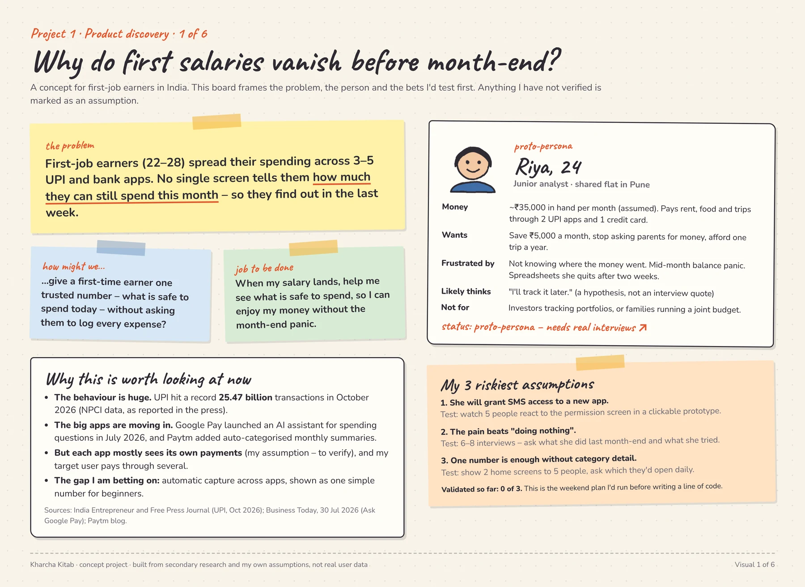
What to notice: the dip in the mood line sits at mid-month, which is why the home-screen number became feature C. Each thinking line is a hypothesis to check in interviews.
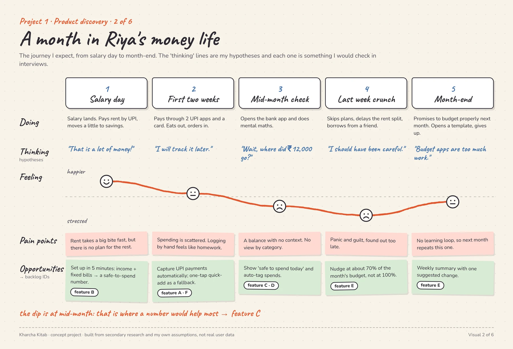
What to notice: the comparison includes a notes app, because doing nothing is the real competitor. The planned product is marked as not built, and the biggest threat is named.
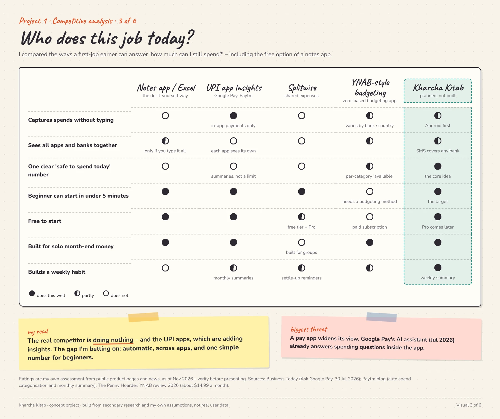
What to notice: auto-import ranks fifth on RICE but stays a Must, with the reason written down. The weekly summary ranks third but is only a Should. RICE ranks ideas and MoSCoW sets the build order.
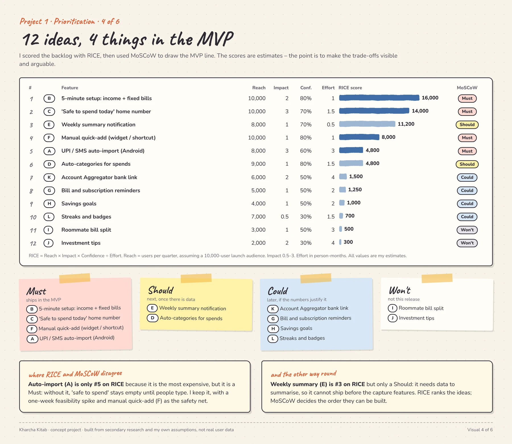
What to notice: three user stories with Given, When, Then criteria, one success metric and one edge case each, so engineering and QA could pick them up.
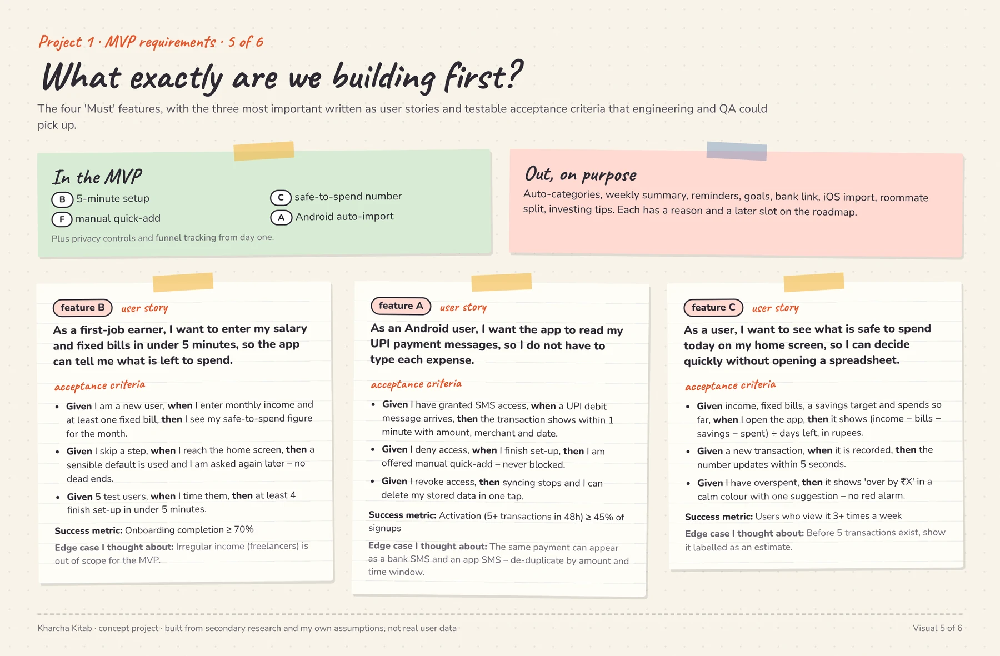
What to notice: outcomes instead of dates, one North Star, targets set before launch, and conditions that would make me change course. The pink note shows the plan changing after Project 2.
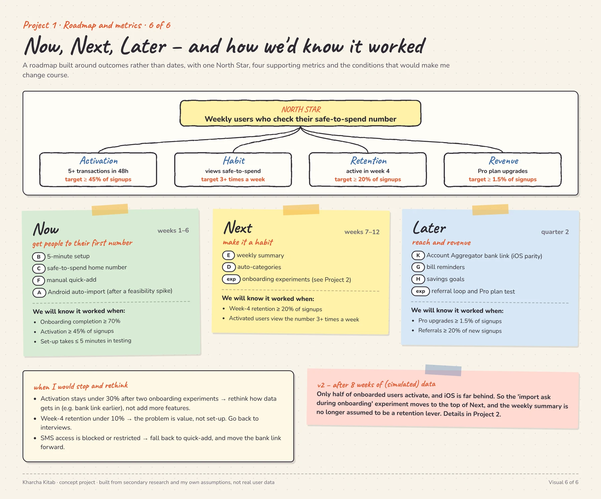
Question: eight weeks after the MVP launch, where do people drop off, who stays, and what should we test first?
What to notice: two of four targets were met and two missed. Between onboarding and activation the funnel loses 2,429 people, the biggest single drop, so that is where the work goes first.
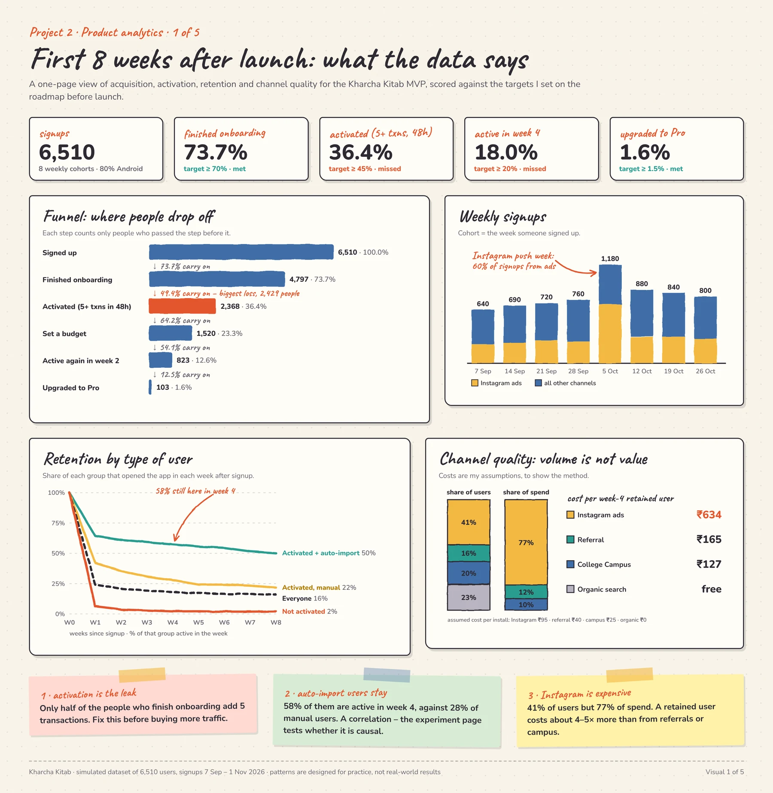
What to notice: onboarding is similar on Android and iOS, but activation is 39% against 26%. The chart turns "improve onboarding" into one testable idea. It also warns that the auto-import gap overstates the feature's effect.
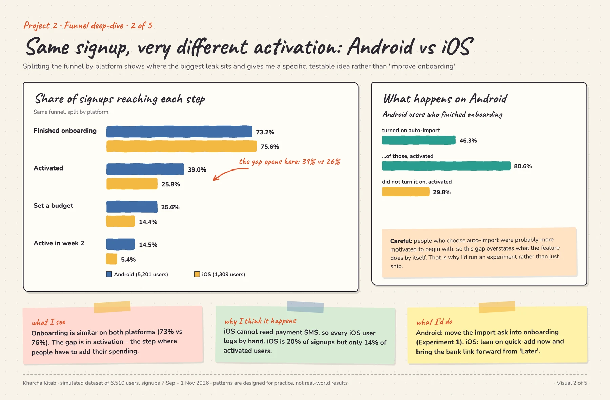
What to notice: most of the loss happens in week 1, then the curve flattens at about 16 to 18 percent. The hatched cells are weeks that have not happened yet, which gives the staircase.
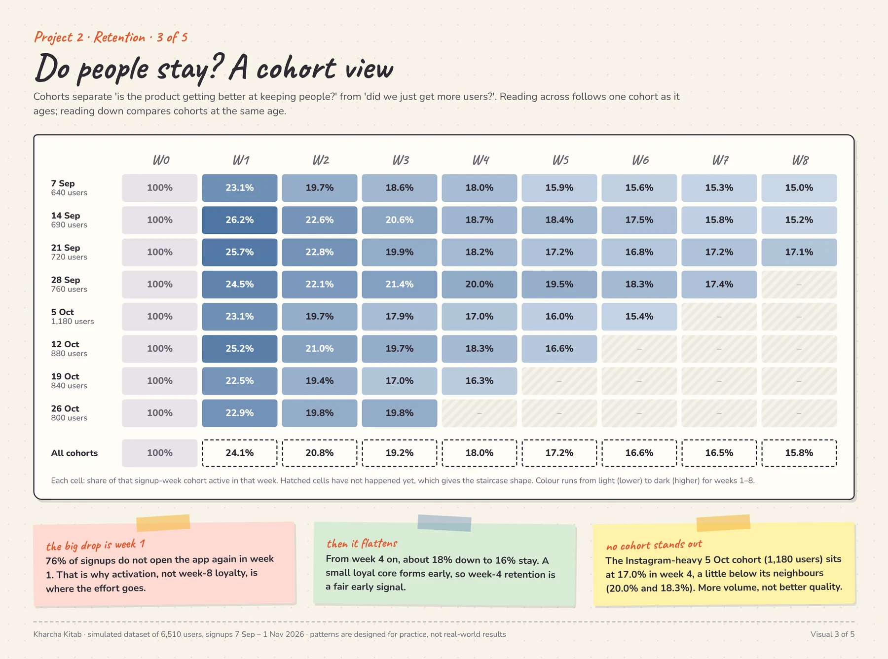
What to notice: the most-used feature shows no lift, and the weekly summary's raw gap shrinks by more than half once users are compared within the same auto-import group. No gap clears the noise band, so none is claimed as a cause.
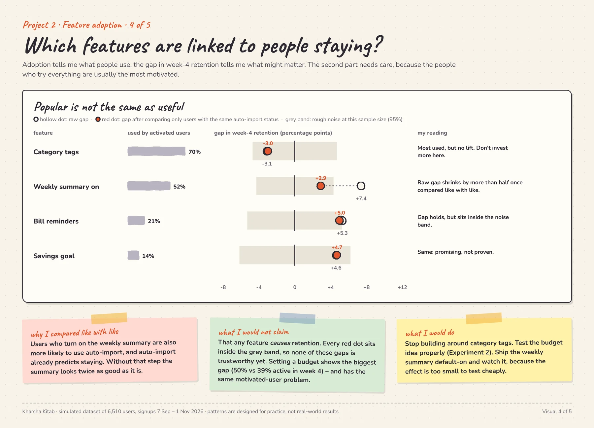
What to notice: one hypothesis, one primary metric, guardrails, a sample size and a decision rule written before the test. A 5-point target takes about 6.5 weeks at this traffic, and a 4-point target would take about 10, which is why 5 was chosen.
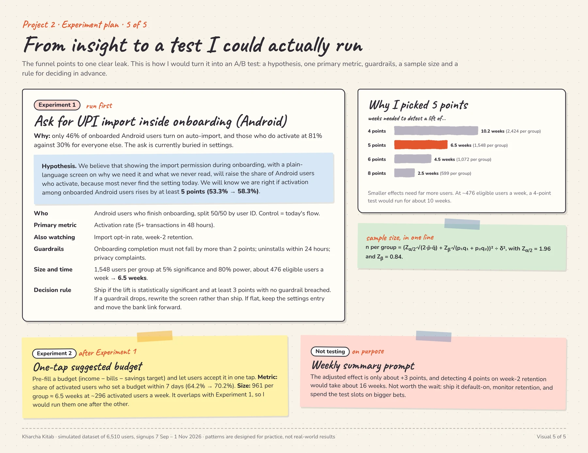
RICE put it fifth because it is the most expensive feature. I kept it in the MVP because the safe-to-spend number is empty without it, and added a feasibility spike and manual quick-add as a fallback.
Users of the weekly summary also tend to use auto-import, and auto-import already predicts staying. Comparing inside each auto-import group cut the apparent lift from 7.4 to 2.9 points.
Smaller effects need far more users. With about 476 eligible users a week, I picked the smallest lift that finishes in under seven weeks.
The adjusted effect is small, and detecting it would take about 16 weeks. I would ship it on by default, watch retention, and spend the test slots on bigger bets.